Volcanoes
and Ice Caps
I studied geophysics in Strasbourg (France) for my Engineering degree, and proceeded with a PhD with fieldwork in Guadeloupe — developing magnetic survey techniques by motorboat and drone to map the geothermal potential of this volcanic island. That thread carried through several postdocs in academia, before I joined a drone magnetic mapping start-up as their sole geophysicist, getting a real taste of the industry side of things.
But alongside the research, a parallel passion was quietly taking shape: the urge to make science accessible, vivid, and worth caring about. Since 2023, I've been pursuing that full-time as a science communicator aboard HX vessels — bringing geology to life in some of the most extraordinary corners of the planet, from North to South, focusing on the polar regions.
Going back in time
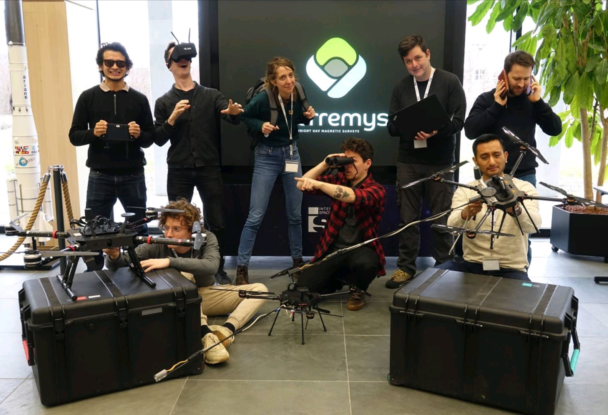
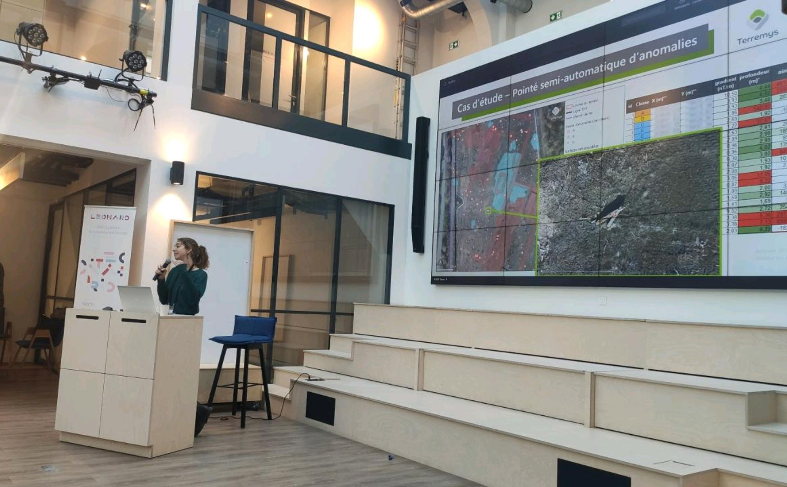
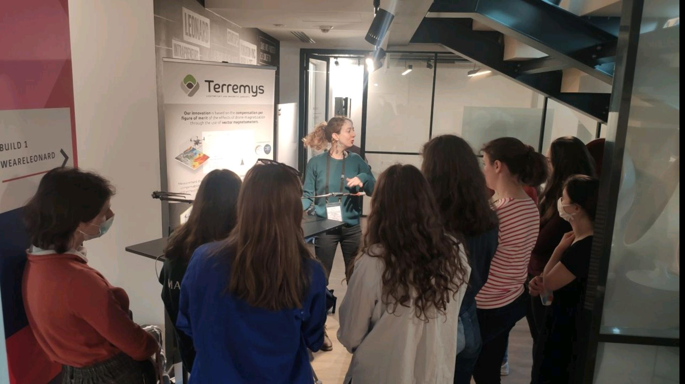
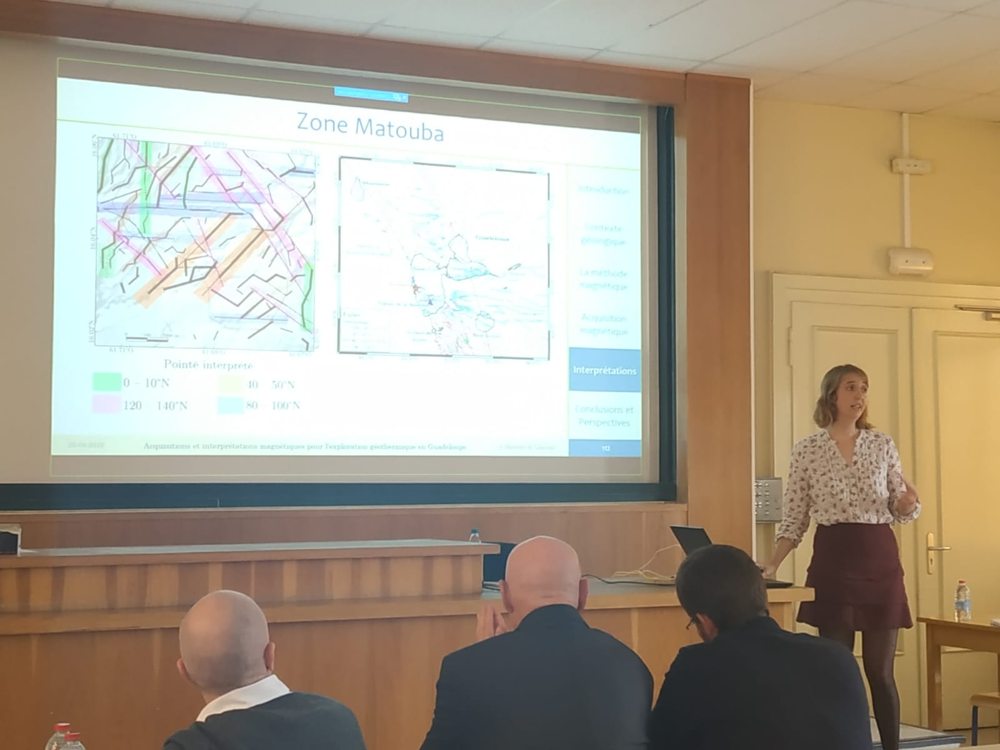
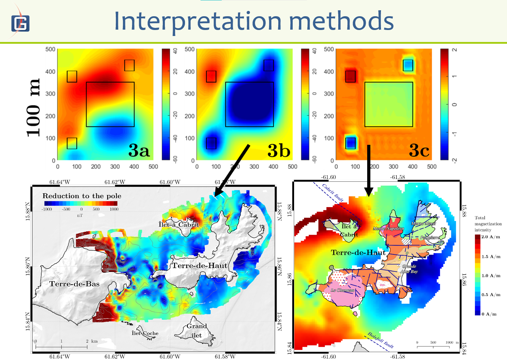
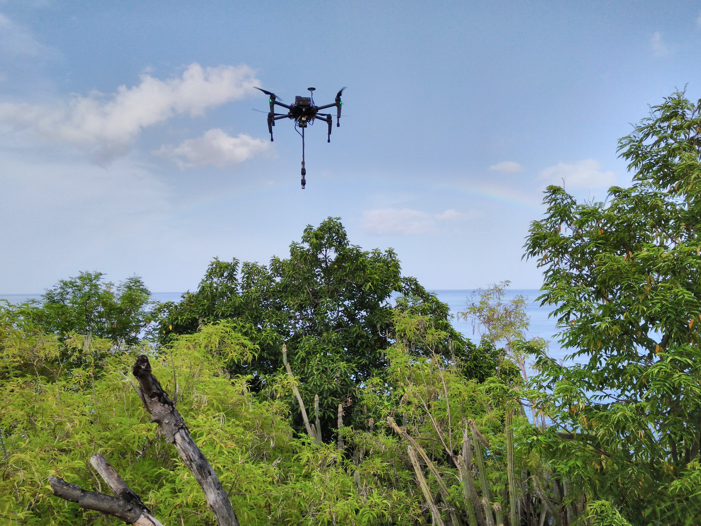
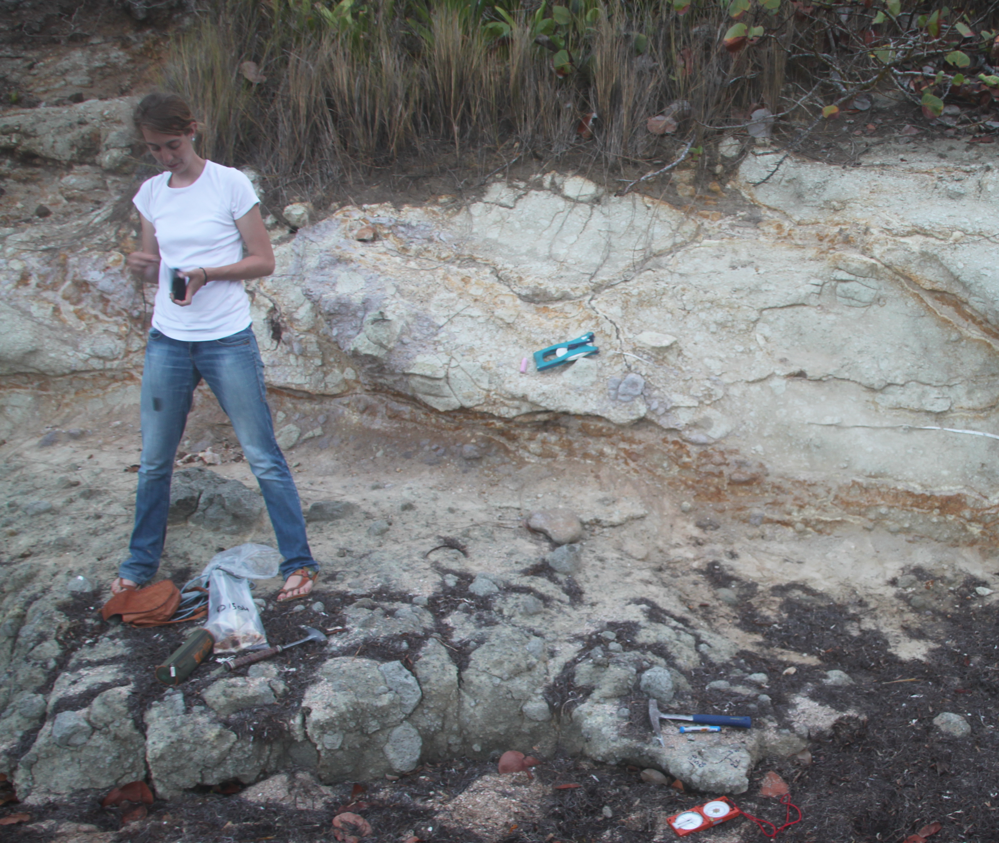
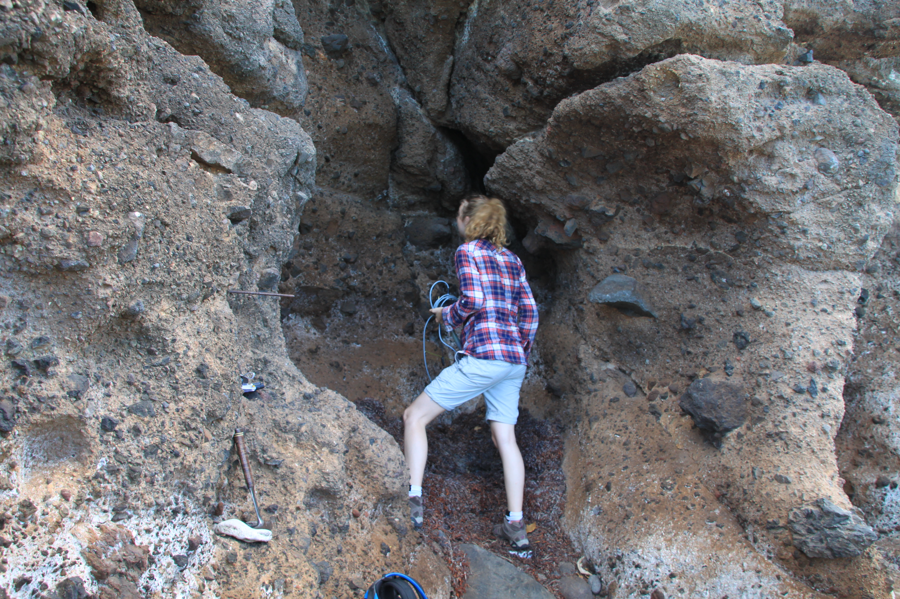
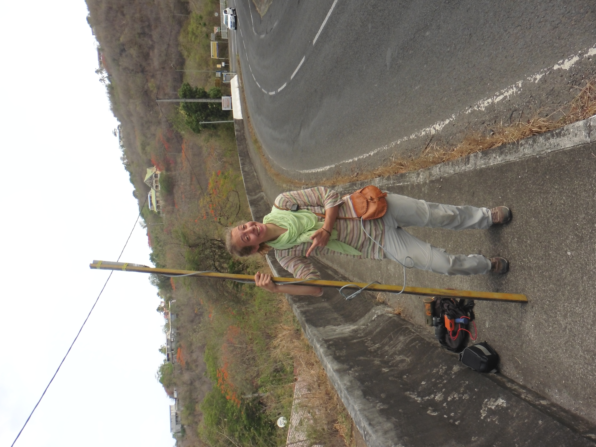
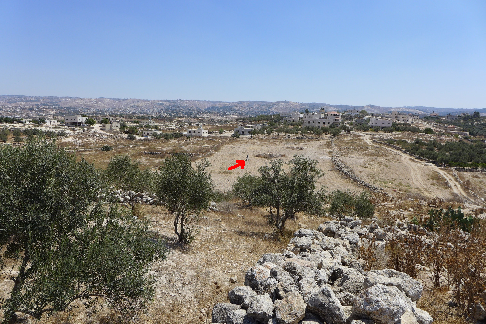
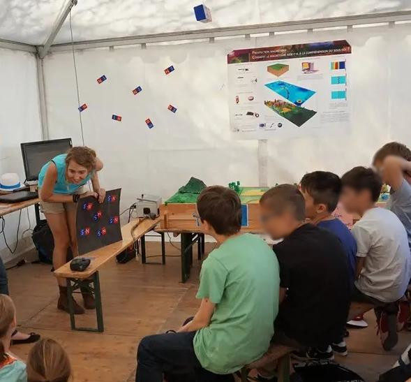
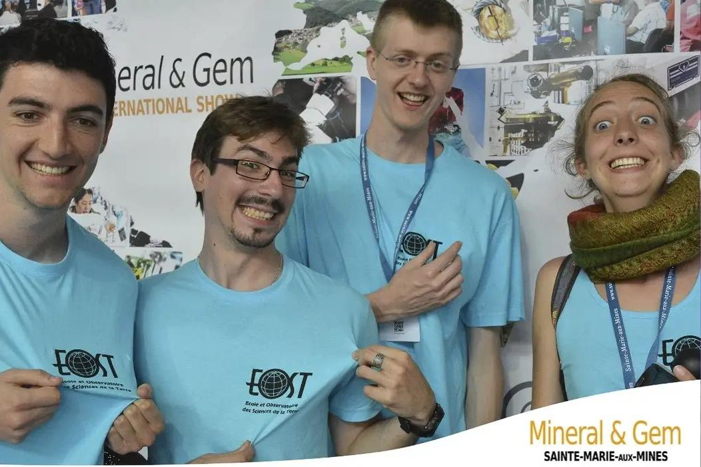
What I do & Life on board
A variety of roles
What I talk about
and do with people
Here is an example selection of ready-to-deliver content. Click any card for details. Lectures run 40–45 minutes including question time; workshops are hands-on; short talks slot in anywhere. As of today, my content includes 18 lectures that I have already given, 25+ workshops and activities, and an ever-growing list of tiny talks/recaps/short lectures.
If you want to know more about my content, contact me!
How do you feel
about climate change?
Since 2023, I've been running a survey aboard Travel HX vessels — collecting responses from passengers on their views, feelings, and attitudes toward climate change. The survey runs in English, German, and Chinese.
Results are analysed using k-means clustering and PCA to identify distinct respondent profiles. The findings are published openly on a dedicated website.